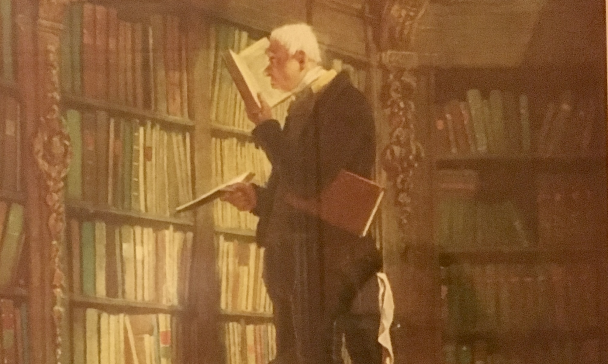
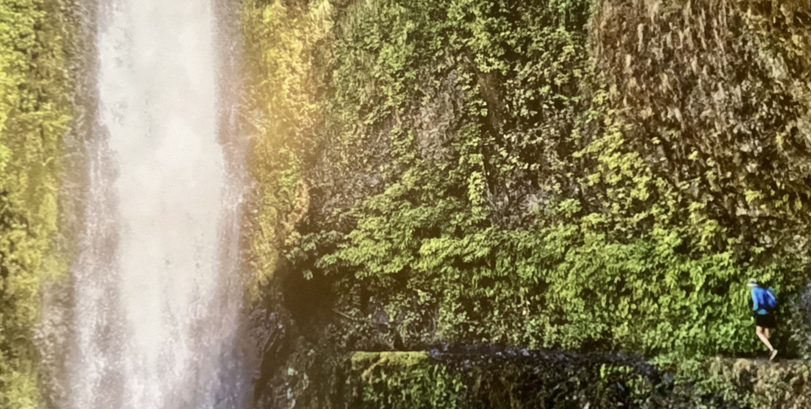
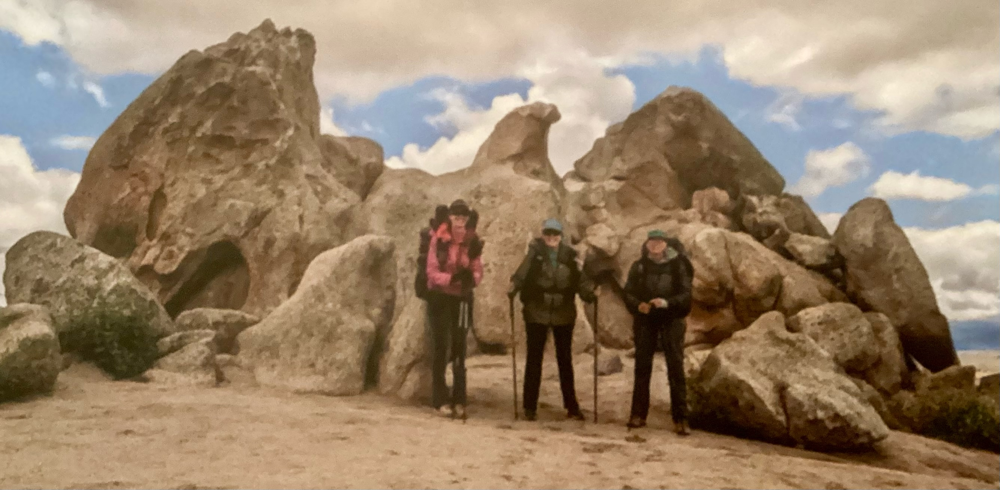

Important People In My Life
I am very proud of all my extended family and network of friends. I am surrounded by engineers, scientists, statisticians, medical professionals, teachers, artists, writers, musicians, woodworkers, chefs, and even an opera singer! A few are listed below.
Jess Hamlin
When I went back to grad school, both of my sons were also in college. My youngest, Jess, and I went to CU Boulder at the same time. He graduated Summa Cum Laude with a B.S. in Computer Science in 2022. His curiosity, tenacity and genuine goodwill take him far. He is now my true friend and more importantly, my hiking buddy. More about Jess.

Dr. John Hanfelt
My brilliant brother has always set the statistical bar high. He is a full professor of BioStatistics and Bioinformatics with the Rollins School of Public Health at Emory University in Atlanta. Hearing about his career and research has been a main inspiration for me, both as I did private research in industry and as I decided to pursue a PhD. More about John.

Dr. Diane Hanfelt-Goade
Too cool for words, my sister Diane is a medical doctor specializing in Infectious Disease (she is always busy). She worked as an Associate Professor when she was at the University of New Mexico. Now she is just as busy but doing things her way in New Zealand. In fact, Diane just flew back and trekked the Pacific Crest Trail with her incredible daughter Dulce and our sister Margery. More about Diane.

Col. Margery Hanfelt, Ret.
With boundless energy and a penchant for not just planning but accomplishing, my sister Margery is a powerhouse. She started as a veterinarian, but made the enormous leap into military service. In the Army, Margery was in command of food safety during the cleanup of the Fukushima nuclear accident, among other amazing feats, leading to her promotion to full Colonel. More about Margery.